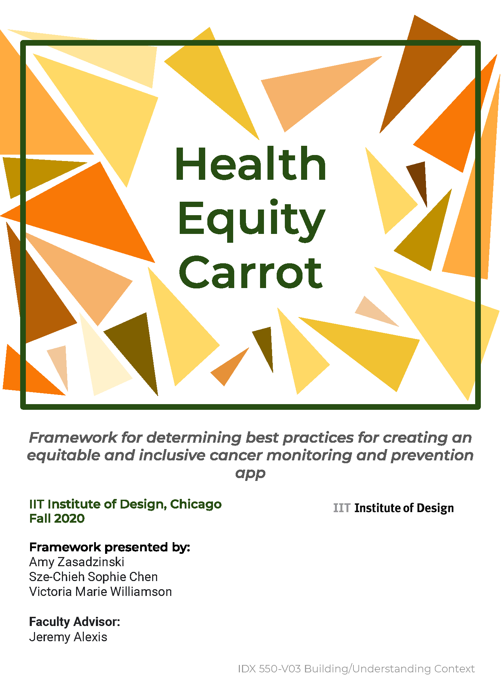

Health Equity Carrot Framework
The Health Equity Carrot is a group project that I completed in grad school. My team worked with a large cancer treatment center in New York to help them move forward with their goal of developing a health and cancer prevention app that was equitable to people of different races and socio-economic statuses. We created this framework to help companies determine specific tactics to implement when developing their health equity apps, and we also produced a worksheet that designers could use to help organize their thinking.